|
SPANISH AFRICA
DEFINITIVE STAMPS OF TANGIER
The city of Tangier (Tanger, Tanja), with an est.
population of 554,000, has been called the Gateway to Morocco and has been
designated as the country's summer capital by King Hassan II. Overlooking
the Straits of Gibraltar with a view of Spain's southern coast, Tangier is
set upon a spectacular bay and has been a magnet for travelers for
millennia.
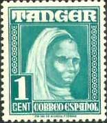 |
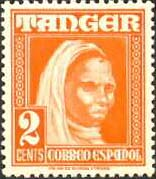 |
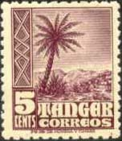 |
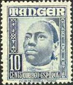 |
Tangier began its revival
from the mid-19th century when European colonial governments fought for
influence over Morocco. France, Spain, England and Germany jockeyed for
position in Tangier where most diplomatic missions were located. In 1905 the
German Emperor Wilhelm II arrived in Tangier to register his antipathy to
French machinations, and the Algeciras Conference was called for the
following year. Attended by all the European powers, this conference granted
Tangier a special status as The Tangier Zone. This placed the town and its
surrounding territory under the authority of an International Commission,
with the Sultan of Morocco as nominal ruler.
|
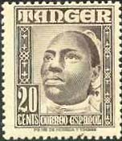 |
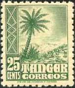 |
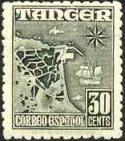 |
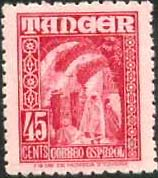 |
A protocol signed in 1925 by Great Britain, France, and Spain provided for
permanent security of the city. However, in 1929 Spain was given police
powers and the city was placed under the legislative control of an
international body.
During World War II Tangier was completely controlled by Spain, reverting to
international authority in 1945. Tangier was thus powerfully Europeanized
and still retains traces of the multiplicity of influences which permeated
the city during that period. With independence in 1956 Tangier became a
fully integrated part of the Kingdom of Morocco.
|
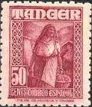 |
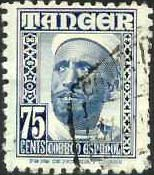 |
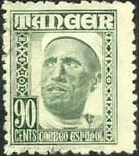 |
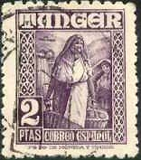 |
Today the city is primarily a shipping centre and tourist attraction, on the
itinerary of day-tripping tourists on package tours of Spain. Places of
interest are: The Grand Socco, The Petit Socco, The Harbour, The
Kasbah.
(after
http://www.arab.net/morocco/tour/mo_tangier.html)
|
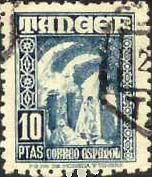 |
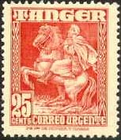 |
The
set shown above (Scott L11-L25, value 1.35 missing) was issued between 1948
and 1951. The values of 1, 2, 10, 20c shows some very interesting
heads of Moroccan men and women, while the values of 75c and 90c presents an
impressive head of a Moor. The values of 50c and 2 Ptas show a Moroccan woman,
the values of 45c and 10 Ptas a view of a Tangier street, the 5c and 25c a
palm tree, and the value of 30c an old map of Tangier. The value of 25c,
showing an Arab Post rider, doesn't belong to this set, and is known as a
Tangier special delivery stamp (Scott LE1).
Credits: many thanks to Tracy Barber
(USA) for the scan of the entire set.
|